2 My First Date with QGIS
In this hands-on exercise, you will learn the basic operations of a GIS software in general and the graphic user interfaces (GUIs) of QGIS specifically.
2.1 Getting Started
First, you will launch QGIS.
- At your window desktop, double-click on QGIS Desktop3.26 icon.
After a few seconds, QGIS window appears.
- On the QGIS Tips! Dialog window, click on the OK button.
Your screen should look similar to the figure below.
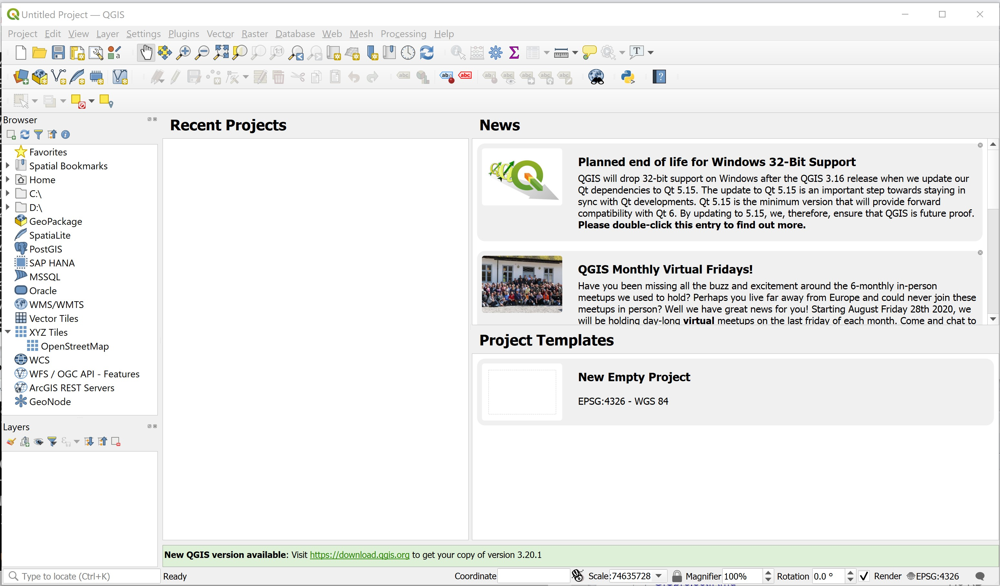
2.1.1 Getting to know a GIS project file
A GIS project file provides a link between the GIS software and the geospatial datasets instead of stored data. It also contains GIS operation configurations such as symbolisation used, data classification, map projection, the paths of each data and map design. In this section, you will explore an existing QGIS’s project file called Hands-on01.qgs.
- Start Window Explorer.
- Navigate to
\SMT201\Hands-on_Ex01\sub-folder.
You will find a file called Hands-On01.qgs in the sub-folder.
- Right-click on
Hands-On01.qgs. - Select Open with from the context menu.
- Use the Notepad to open the file.
The Notedpad window should look similar to the figure below.
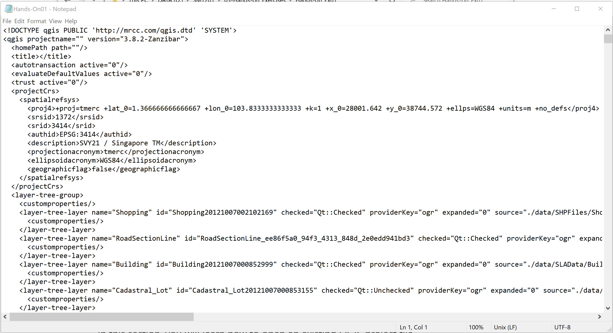
Notice that the QGIS project file is actually in XML format.
- Close Notepad.
2.1.2 Open an existing project file
In this section, you will learn how to open an existing QGIS project file.
- From QGIS main menu, click on Project -> Open.
The Choose a QGIS project file to open dialog window appears.
- Navigate to
\SMT201\Hands-on_Ex01\sub-folder. - Double-click on
Hans-On01.qgsfile.
Your screen should look similar to the figure below.
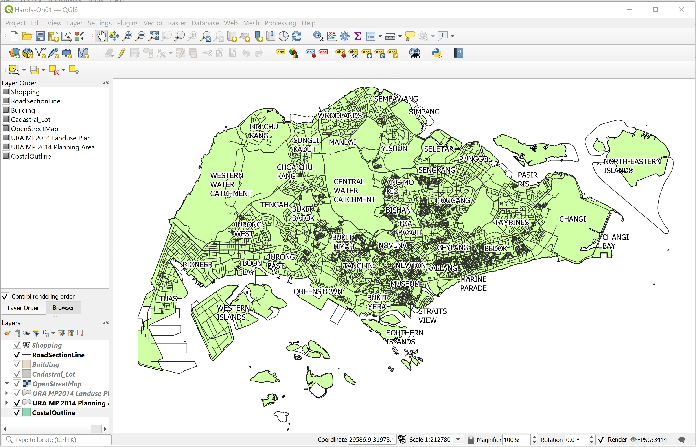
2.2 Exploring QGIS interfaces
The QGIS interface comprises six major components. They are: menu bar, toolbar, map legend, browser, status bar and map view. The Menu Bar provides access to various features and functions of QGIS using hierarchical menu. The location of the menu and menu items is fixed, although if you activate certain plugins, they may add an additional menu to the bar.
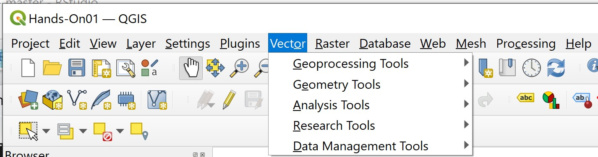
The Toolbar replicates many of the features and functions in the Menu Bar, providing access to common features in a single click. The location of the toolbar is not fixed; if you hover over the edge of the toolbar and hold down the left mouse button you can drag the toolbar wherever you like.
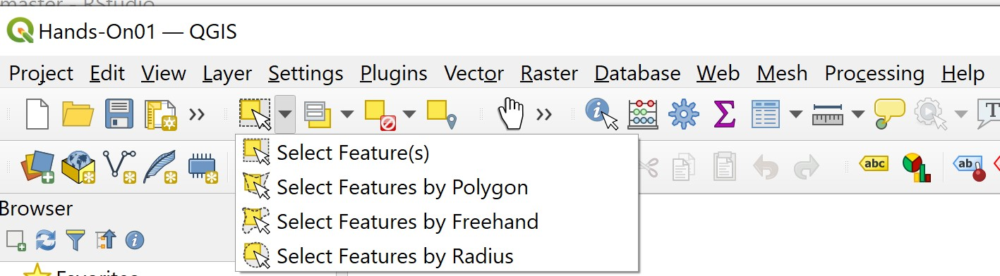
The Map Legend lists data layers that are linked with the current project.
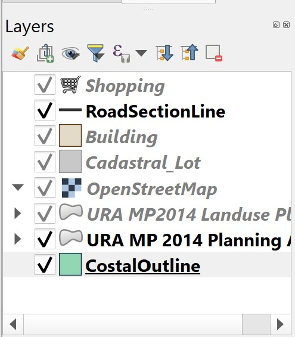
You can turn each of the data layer on and off by clicking on the checkbox in front of each data layer.
- From the Map Legend, click on the checkbox in front of CoastalOutline.
Notice that the Singapore boundary map on the Map View window disappears.
- Click on the checkbox in front of CoastalOutline again.
Notice that the Singapore boundary map on the Map View window re-appears.
The Browser, a new feature in QGIS 2.0, allows users to see their file system and all of the GIS data files and databases. It also allows users to drag files from the file system into QGIS project.
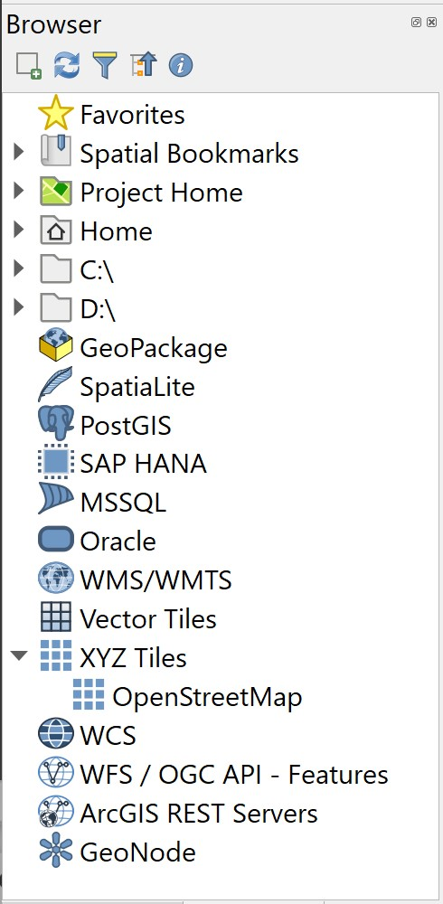
The Status Bar shows the current scale of the map view, the coordinates of the current position of the cursor and the coordinate system used by the project. When a computation operation such as buffering is used, the progress meters will appear here to show the progress of the operations.
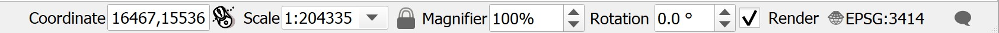
Last but not least, the Map View window displays all the active layers in the project.
2.4 Exploring GIS data
In this section, you will learn how to interact with the features that appear in the Map View and retrieve their corresponding attribute information.
2.4.1 Exploring GIS Layer
In this sub-section, you will learn how to explore the information of individual GIS layer.
- From the Map Legend window, right-click on
Buildinglayer. - Select Properties from the context menu.
The Layer Properties of Building layer appears. It provides the full metadata of Building layer, it symbolization configuration and the data fields.
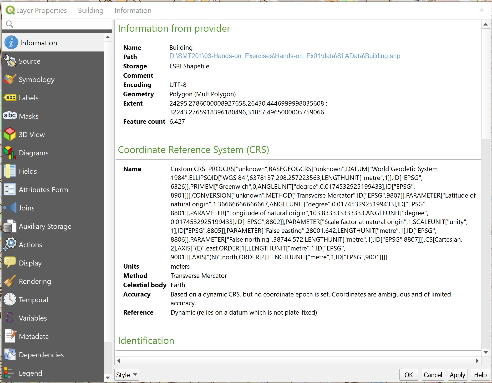
By default, QGIS will display the general information of the selected layer. You can retrieve other information or configurations of the layer by clicking on the appropriate tab.
The key information available are as follows:
- Source shows the path of Building layer.
- Storage reveals the file type, i.e. ESRI Shapefile format.
- Geometry indicate the spatial object used to represent the real world feature.
- CRS shows the georeferencing information of the active layer (i.e. SVY21/Singapore TM).
- Unit is the unit measurement of the active layer.
Let us examine other tab.
• Click on Rendering tab.
You screen should look similar to the figure below.
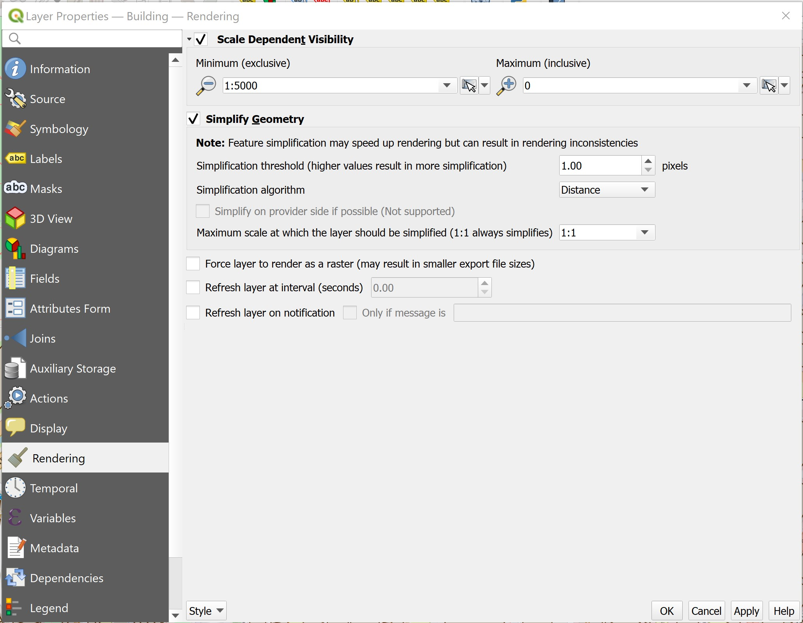
Note that and the minimum map scale is 5000. That explains why the building layer only appears when the map scale of Map View is less than or equal to 1:5000.
Next, you will explore the data fields of Building layer.
- Click on the Field tab.
Your screen should look similar to the figure below.
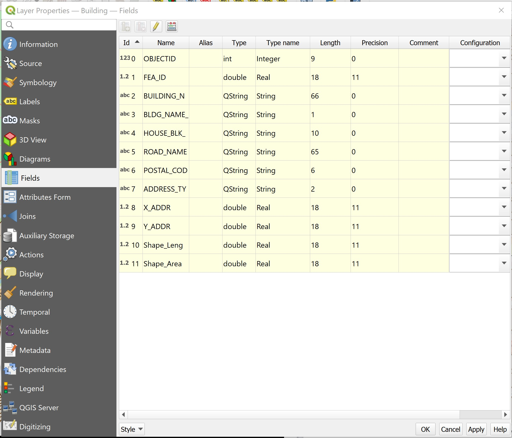
Notice that there are 12 fields in the corresponding attribute table of Building layer. The Layer Properties window also shows the data type, length and precision of each field.
You will explore the other tabs in the next hands-on.
- At the Layer Properties window, click on the cross button located at the upper right hand corner to close the window.
2.4.2 Working with Identify Features tool
Using Identify Features tool to interact with a geographical feature and retrieve its corresponding attribute information is a two steps process. First, you need to make the layer of the feature active. Then, you will use the Identify Features tool to query the information.
In this section, you will learn how to query information of a selected Shopping feature (marks by a circle in the figure above).
• At the Map Legend window, click on Shopping layer to make it active.
• Click on the Identify Features tool.
• At the Map View window, hovers the mouse over the shopping feature you are interested to query (the one marked in the figure above).
• Click on an shopping feature.
Your screen should look similar to the figure below.
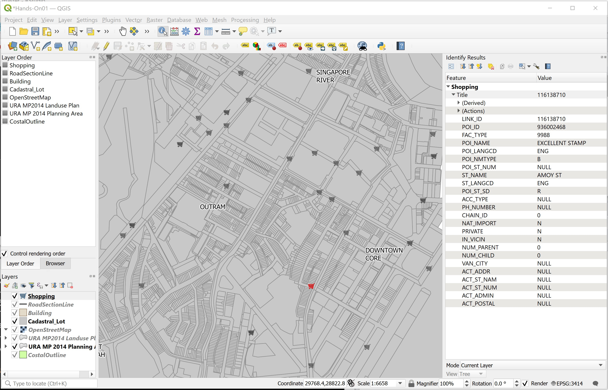
Notice that the selected shopping feature was highlighted (i.e. in red) and the Identify Results window appears.
DIY: Using the steps you had learned from this section, query a building feature, a road network feature and a URA planning area feature.
2.4.3 Query Attribute Table
The ability to interactively select a geographic feature and query its associated attribute information is a very powerful feature of a GIS. However, there are times that you would like to see the attributes of all the features in a GIS layer. In this section, you will learn how to use QGIS’s Open Attribute Table function to display the attribute table of a GIS layer.
• At the Map Legend window, right-click on Building layer.
• Select Open Attribute Table from the context menu.
The Attribute table window appears.
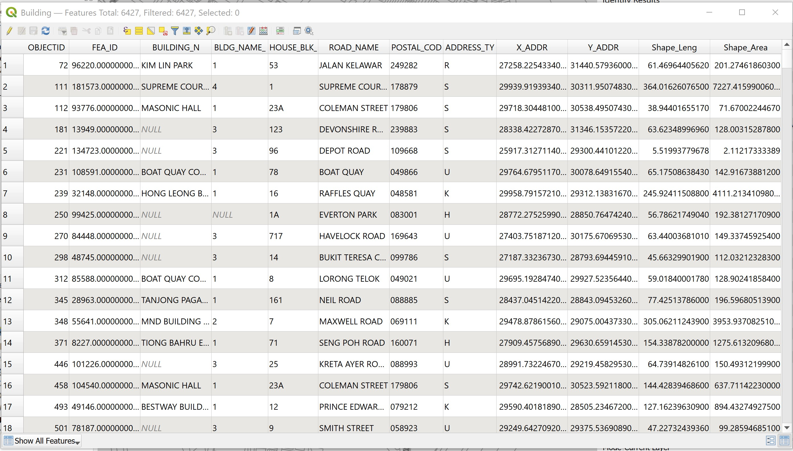
The table provide detail information of each geographical feature (i.e. building) such as building name, postal code, road name, block number, just to name a few of them.
DIY: Using the steps you had learned from this section, review the attribute table of
ShoppingandURA MP2014 Planning Arealayers.
2.5 Spatial Bookmarking
Spatial Bookmarks allow us to “bookmark” a geographic location and return to it later. In this sub-section, you will learn how to create a spatial bookmark. You will also learn how to navigate using spatial bookmark.
2.5.1 Create spatial bookmark
We are interested to create a bookmark for the downtown centre.
- At the layer panel, right click on
Cadastral Lot, select Zoom to Layer(s) from the context menu.*
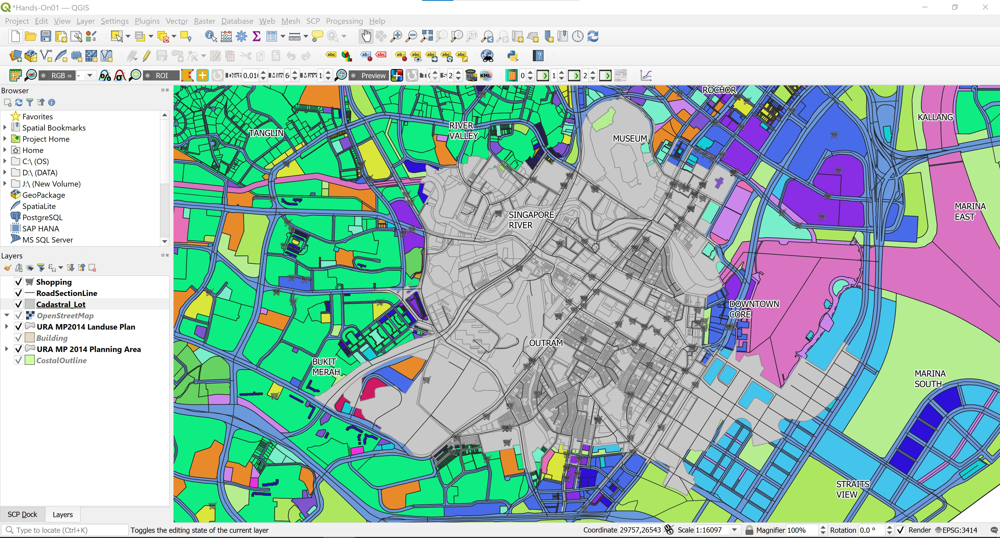
- From the menu bar, click on View -> New Spatial Boomark.
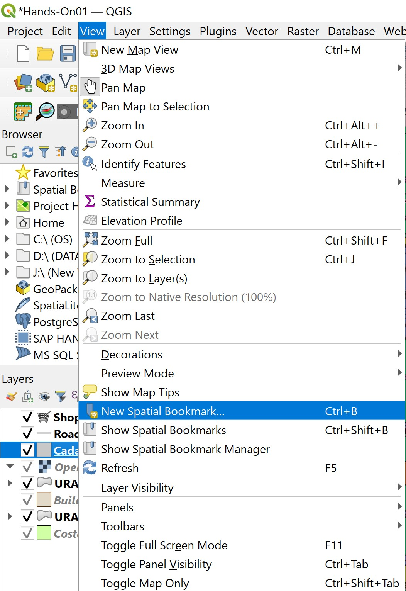
Bookmark Editor dialog window appears.
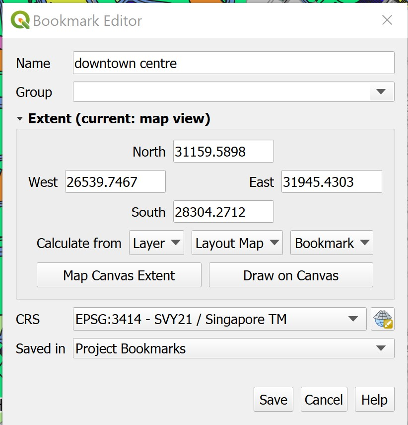
For Name:, type
downtown centre.For Save in, select Project Bookmarks from the dropdown list. This will save the spatial bookmark in the project file.
Click Save button.
Now, you are ready to test if the newly create spatial bookmark works correctly.
First, we will zoom out to the extend of planning area.
DIY: Using the steps you had learned from earlier section,zoom to the extend of
URA MP 2014 Planning Arealayer.
- From the menu bar select View -> Show Spatial Bookmarks.
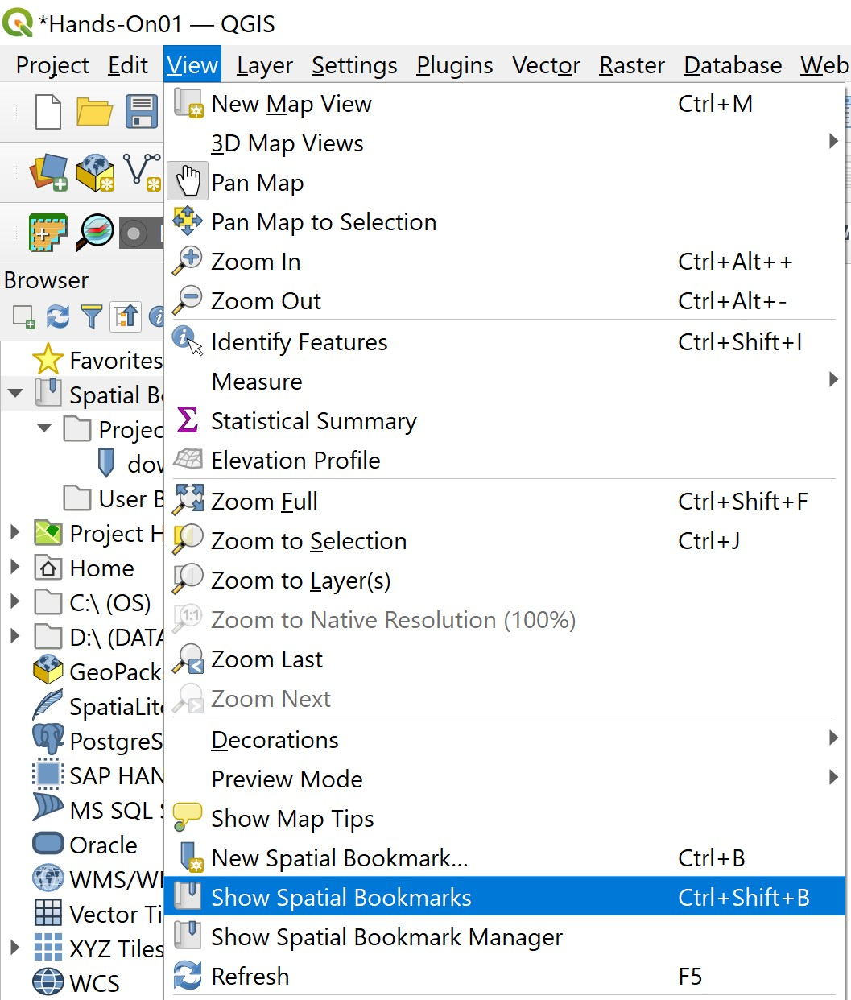
Notice that a new item call Spatial Bookmarks is added on the Browser pane as shown in the screenshot below.
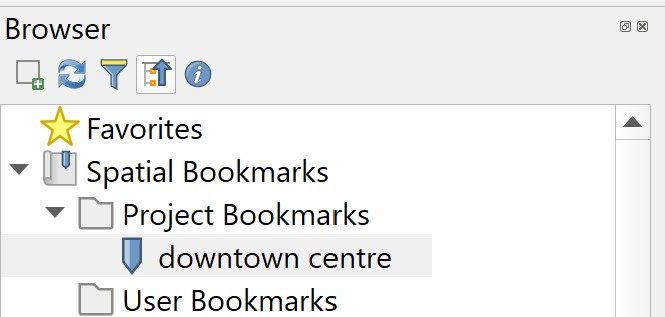
- Double-click on downtown centre.
Notice that the view will zoom to the same map extend centre at the Downtown Centre you have saved as spatial bookmark not long ago.
DIY: Choose a planning area i.e. Choa Chu Kang. Next, using the steps you had learned from earlier section, create a new spatial bookmark.
Whew! That was a lot to take in! Take a deep breath and relax. By now you should have a good understanding of the basic operations of QGIS. You can start playing with it and practice the techniques that you have learned.